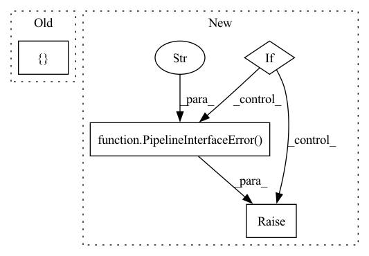

Pattern ID :30358
Before Change
combined_steps[key] = step
step_cls_args.add(step_class)
step_cls_kwargs: Dict[Type[BaseStep], str] = {}
for key, step in kw_steps.items():
step_class = type(step)
After Change
f"a pipeline."
)
if step_class in step_classes:
previous_key = step_classes[step_class]
raise PipelineInterfaceError(
f"Found multiple step objects of the same class "
f"(`{step_class}`) for arguments "{previous_key}" and "
f""{key}" in pipeline "{self.name}". Only one step object "
f"per class is allowed inside a ZenML pipeline."
)
step.pipeline_parameter_name = key
combined_steps[key] = step
step_classes[step_class] = keyIn pattern: SUPERPATTERN
Frequency: 3
Non-data size: 4
Instances Fragment ID: 89828842
Project Name: maiot-io/zenml
Commit Name: 2dfa04cd6a27360abbb027da0029f0ec23491af7
Time: 2022-01-25
Author: schustmi@users.noreply.github.com
File Name: src/zenml/pipelines/base_pipeline.py
M Class Name: BasePipeline
N Class Name: BasePipeline
M Method Name: _verify_arguments(1)
N Method Name: _verify_arguments(1)
M Parent Class:
N Parent Class:
M File Name: src/zenml/pipelines/base_pipeline.py
N File Name: src/zenml/pipelines/base_pipeline.py
M Start Line: 138
M End Line: 202
N Start Line: 137
N End Line: 197
Before Change
)
combined_steps = {}
step_refs: Dict[type, str] = {}
for i, step in enumerate(steps):
if not isinstance(step, BaseStep):
raise PipelineInterfaceError(After Change
f"unique for each argument."
)
if step_class in step_cls_args:
raise PipelineInterfaceError(
f"Step object (`{step_class}`) has been used twice. Step "
f"objects should be unique for each argument."
)
step.pipeline_parameter_name = key
combined_steps[key] = step
step_cls_kwargs[step_class] = key Fragment ID: 89828841
Project Name: maiot-io/zenml
Commit Name: 9660f48a712419ddfbf5570b59272cf27c3543ed
Time: 2021-12-30
Author: kamalesh800@gmail.com
File Name: src/zenml/pipelines/base_pipeline.py
M Class Name: BasePipeline
N Class Name: BasePipeline
M Method Name: _verify_arguments(1)
N Method Name: _verify_arguments(1)
M Parent Class:
N Parent Class:
M File Name: src/zenml/pipelines/base_pipeline.py
N File Name: src/zenml/pipelines/base_pipeline.py
M Start Line: 150
M End Line: 205
N Start Line: 151
N End Line: 215
Before Change
if k in self.STEP_SPEC:
self.__steps.update({k: v})
elif k in self.INPUT_SPEC:
self.__inputs.update({ k: v} )
else:
raise PipelineInterfaceError(
f"The argument {k} is an unknown argument. Needs to be "After Change
self.__steps = dict()
if args:
raise PipelineInterfaceError(
"You can only use keyword arguments while you are creating an "
"instance of a pipeline."
)
for k, v in kwargs.items():
if k in self.STEP_SPEC:
if issubclass(type(v), self.STEP_SPEC[k]): // noqa Fragment ID: 89828839
Project Name: maiot-io/zenml
Commit Name: 194c59640351989c3b0e4a7f5502a533b4cdb334
Time: 2021-10-12
Author: htahir111@gmail.com
File Name: src/zenml/pipelines/base_pipeline.py
M Class Name: BasePipeline
N Class Name: BasePipeline
M Method Name: __init__(1)
N Method Name: __init__(1)
M Parent Class:
N Parent Class:
M File Name: src/zenml/pipelines/base_pipeline.py
N File Name: src/zenml/pipelines/base_pipeline.py
M Start Line: 51
M End Line: 69
N Start Line: 52
N End Line: 72